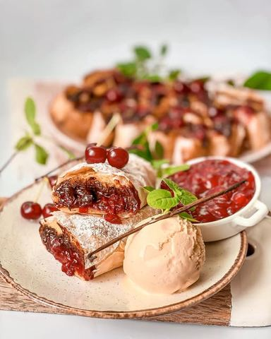

Pita sa i crnom čokoladom

Moja beleška
SačuvanoBrutalno sočna i moćna kombinacija - višnja nadev i crna čokolada. Verujem da će vas oduševiti. 🥰 Da ne dužim, ostavljam recept i smernice za pripremu:
Sastojci
- Potrebne su
- Premaz za kore
Priprema
2. premaz za kore ✔️ 3. višnja nadev ✔️ Sjedini se sve i umuti žicom za mućenje pa se time premazuju prva, druga i treća kora, a na treću uz donju ivicu se stavlja 🍒 nadev, pa preko kapljice crne čokolade ili sitnije seckana crna čokolada. Podviju se kore sa strane, još malo premažu, pa se lagano urola. Ja sam od ove smese imala dovoljno materijala za tri pruta pite. Višnja nadev 🍒 Ostavite da na srednjoj temeraturi malčice krčka, pa lepo umešajte i sjedinite. Peći u zagrejanoj rerni na 200C nekih 15-20 minuta, a pre toga premazati uljem. Pečenu i prohladjenu možete posuti šećerom u prahu, a sjajno ide uz veeeeliku kuglu sladoleda od vanile. Uživajte 🍒
Originalni opis sa Instagrama
Pita sa 🍒 i crnom čokoladom Brutalno sočna i moćna kombinacija - višnja nadev i crna čokolada. Verujem da će vas oduševiti. 🥰 Da ne dužim, ostavljam recept i smernice za pripremu: Potrebne su: 1. kore za pitu (9 komada)✔️ 2. premaz za kore ✔️ 3. višnja nadev ✔️ 4. crna čokolada (150 gr)✔️ Premaz za kore: •2 jaja •200 ml jogurta •50 ml ulja •80 gr griza •1/2 praska za pecivo Sjedini se sve i umuti žicom za mućenje pa se time premazuju prva, druga i treća kora, a na treću uz donju ivicu se stavlja 🍒 nadev, pa preko kapljice crne čokolade ili sitnije seckana crna čokolada. Podviju se kore sa strane, još malo premažu, pa se lagano urola. Ja sam od ove smese imala dovoljno materijala za tri pruta pite. Višnja nadev 🍒 •500 gr svežih višanja •50 gr šećera •1 burbon vanila šećer •2 kašike soka od limuna •20 gr gustina •1/2 kašičice cimeta Ostavite da na srednjoj temeraturi malčice krčka, pa lepo umešajte i sjedinite. Peći u zagrejanoj rerni na 200C nekih 15-20 minuta, a pre toga premazati uljem. Pečenu i prohladjenu možete posuti šećerom u prahu, a sjajno ide uz veeeeliku kuglu sladoleda od vanile. Uživajte 🍒 • • • #pita #slatkapita #pitasavisnjama #pitasačokoladom #dezert #idejezadezert #slatkisi #mojirecepti #recepti #brzoiukusno #zadovoljnahr #uspjesnazena #cherrypie #chocolatecherrypie #deliciousfood #soulfood #soulfoodcooking #cherryontop